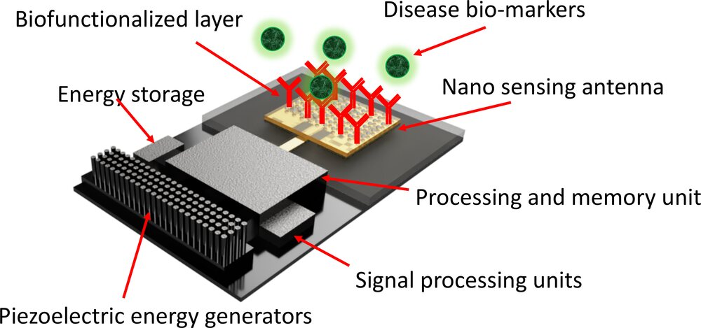
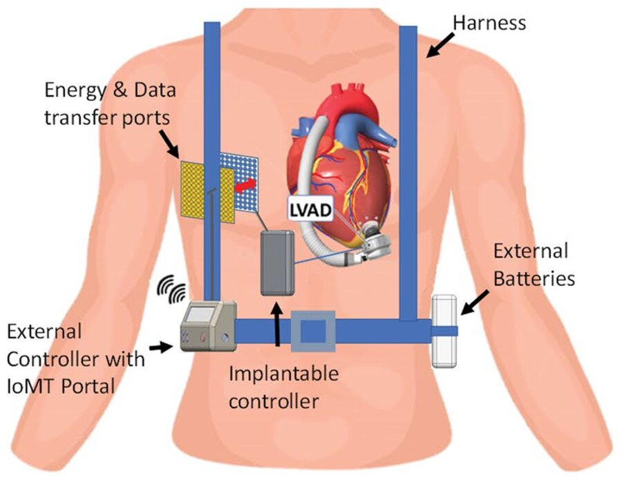
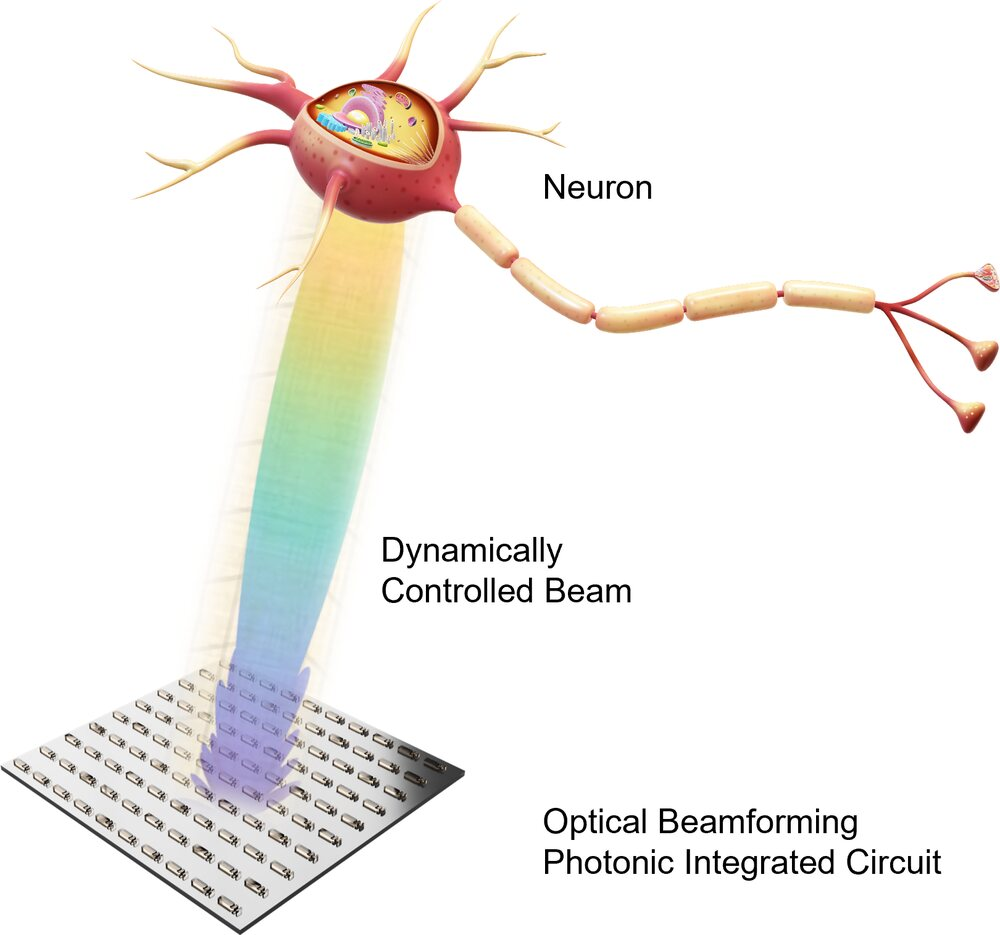
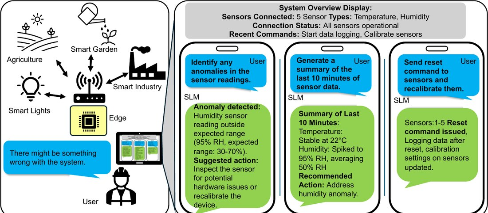

College of Engineering · Utica, NY
College of Engineering · Utica, NY
College of Engineering · Utica, NY
College of Engineering · Utica, NY
To work inside the body, a device must communicate, stay powered, interface with living cells, and think for itself when it cannot reach the cloud. These problems are usually studied separately. We design all four as one system, with applications in healthcare, future therapeutics, and advanced implant design.
The first problem is communication. Antennas and optical parts that work well in today's electronics stop working efficiently when they are shrunk to the size of a cell and placed in tissue.
We study how light, and surface plasmons (light waves bound to metal surfaces), can carry information at these sizes. Our focus is on plasmonic waveguides, nano-antenna arrays that steer their beams, and very short optical links. The aim is to connect conventional electronics to processes happening at the molecular scale.

The second problem is power. Very small implants cannot carry a battery large enough to keep them running for long.
We design wireless power systems around how energy actually travels through the body. We use inductive, resonant, and ultrasonic links, and we design the receiver, antenna, and power circuits together so the whole system is safe and efficient.

The third problem is the interface. A useful device has to read signals from cells and also influence them, without damaging the tissue around it.
We build optical interfaces to do this. Our optogenomic work uses light to switch genes on and off in cells, and our implantable photonic chips aim light at individual neurons for optogenetics. The long-term aim is better tools for neuroscience and, eventually, new clinical therapies.

The fourth problem is intelligence. Small devices, whether in the body, on a farm, or in a factory, collect far more data than they can send, and they often have no reliable connection to the cloud.
We put the intelligence on the device itself. We run small language models and physics-based machine learning on low-power hardware, so a sensor network can spot faults, sense the radio spectrum, and explain what it sees in plain language, all offline.

The long-term goal is wireless communication, sensing, and intelligence that work at every scale: on a chip, in a wearable, and inside the body. Researchers call this the Internet of Nano-Things, and each project in the lab builds part of it.
We work with people in materials science, circuit design, neuroscience, and medicine, and we welcome new academic, clinical, and industry partners.